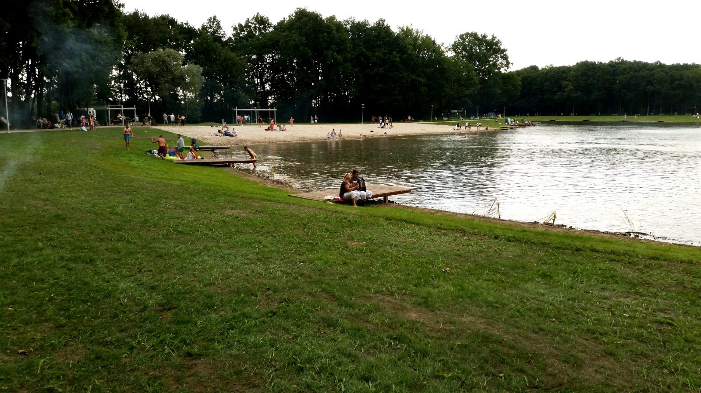
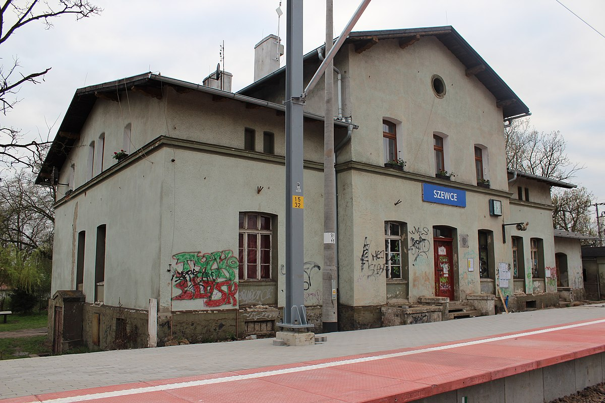
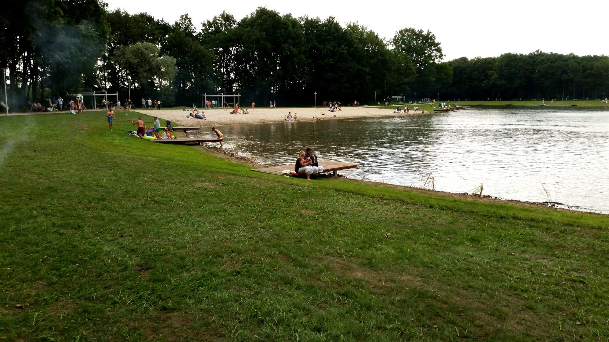
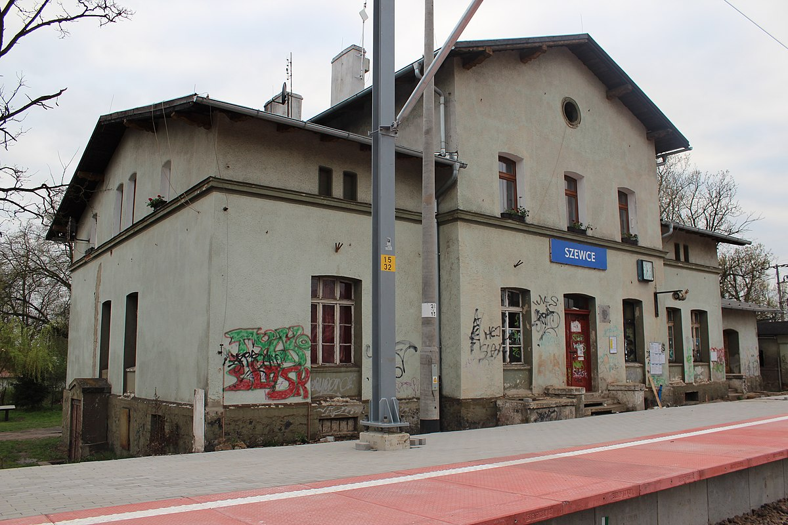
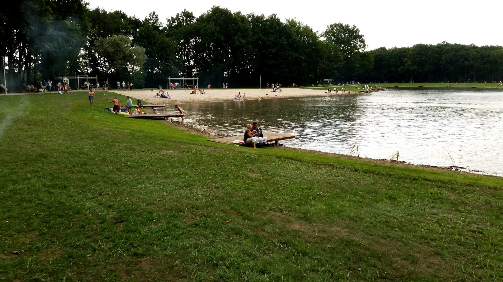
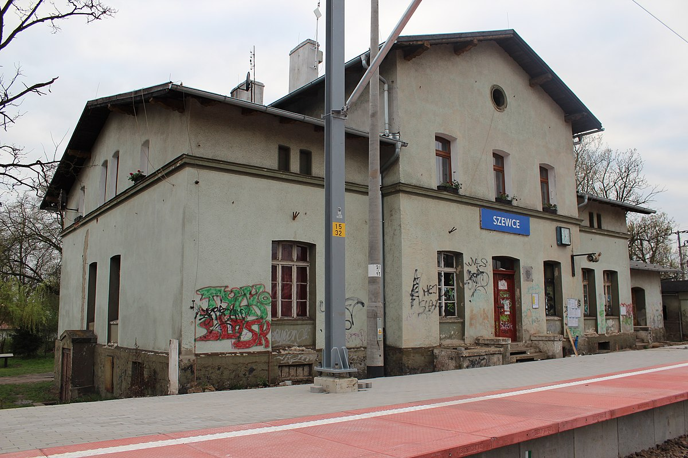
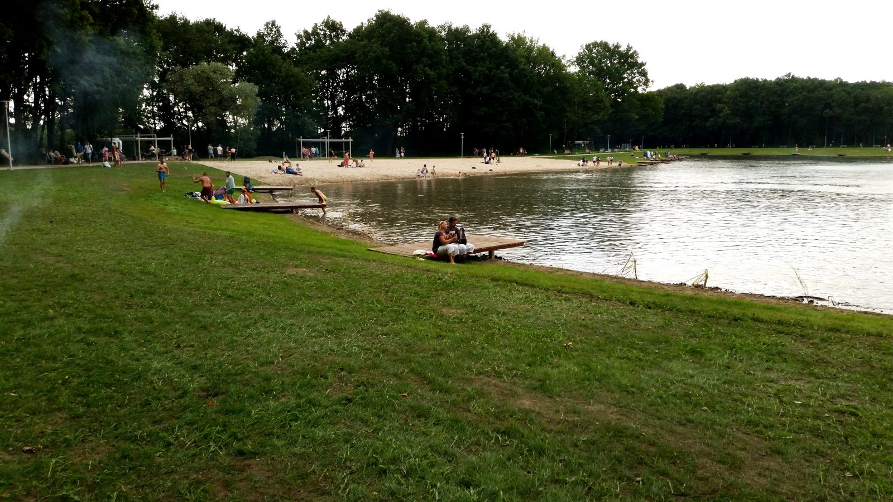
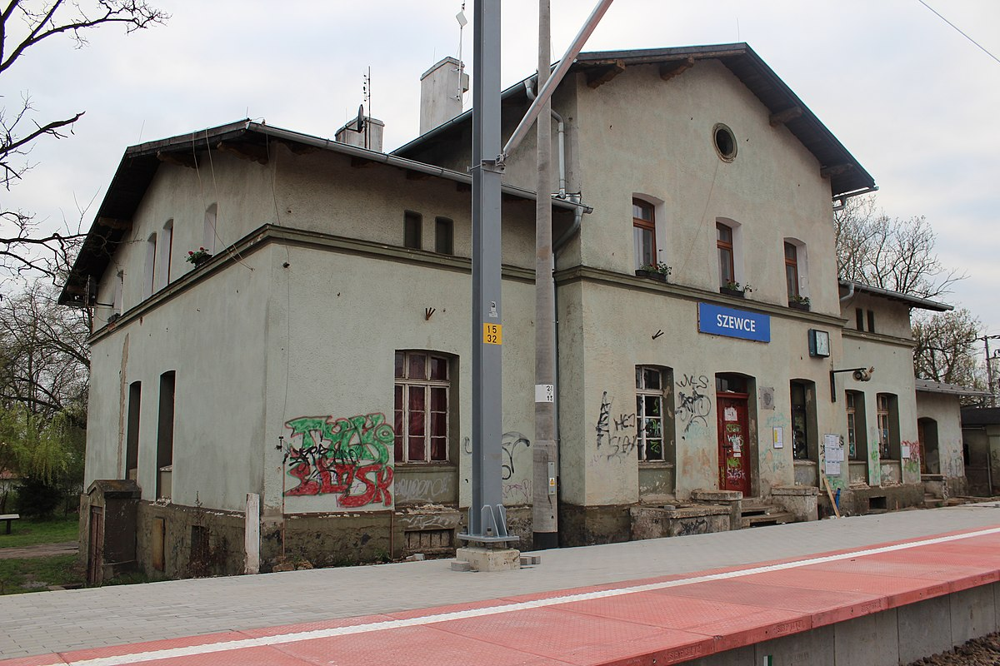
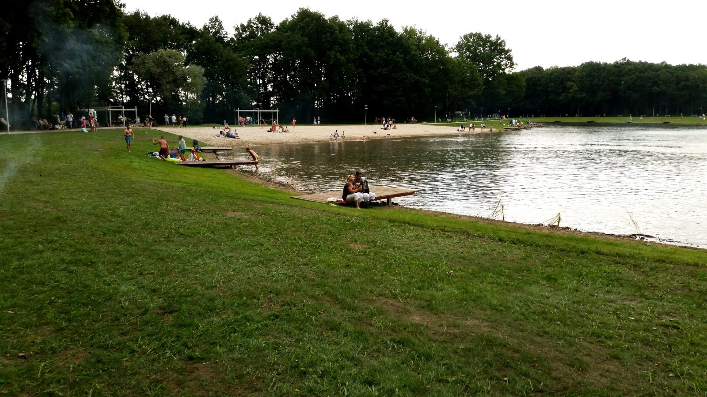
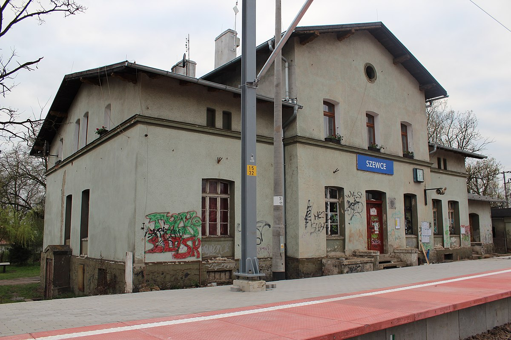

Oficjalna strona wioski paniowice
 
PANIOWICE: wioska kultury i historii
16:00
Miejsca w Paniowicach:
Kopalnia
Wrocław
Paniowice
Pałac w Paniowicach
(już nie istnieje)
współczesny kościół pw. Miłosierdzia Bożego należący do parafii św. Anny w
Szewcach
Paniowicach
stacja kolejowa
Szewce
Paniowice

 






